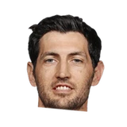

KC Johnson:Thibodeau, on Hinrich's return:
“It was huge for us. Basically he saved us the last two seasons.”
, CC BY-SA 2.0, via Wikimedia Commons")

Every quote from Tom Thibodeau about Kirk Hinrich in the archive, newest first. Each one links to its original source.
KC Johnson:Thibodeau, on Hinrich's return:
“It was huge for us. Basically he saved us the last two seasons.”
Thibs on Hinrich injury:
“I don’t know how serious it is. If he needs time, he’ll get it. If he doesnt, he’ll play.”